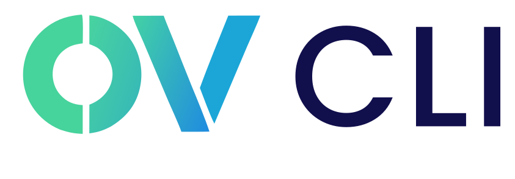
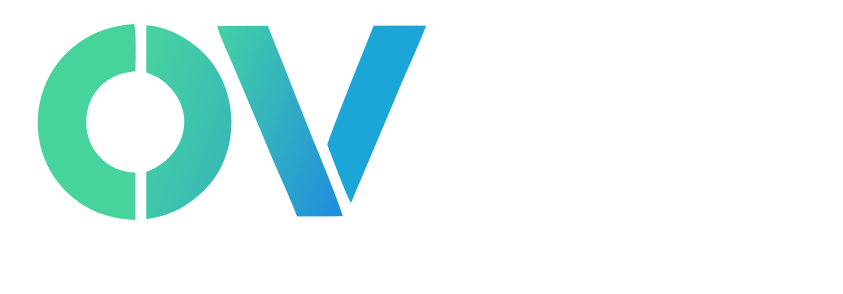
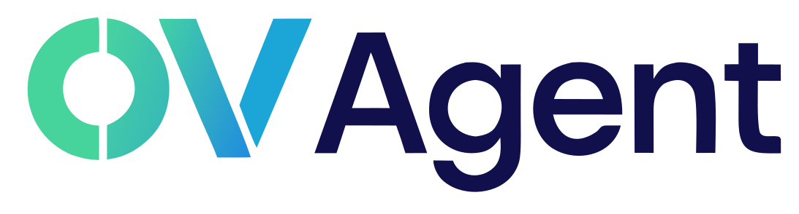
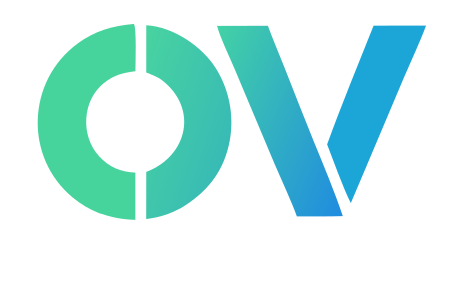
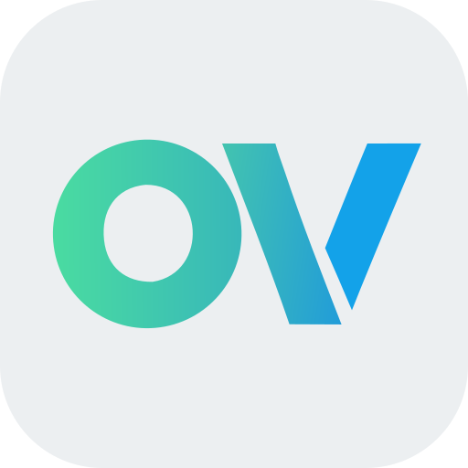
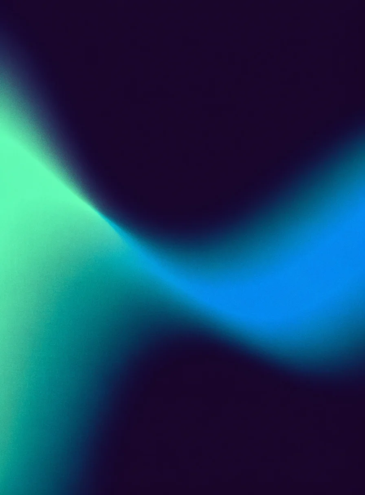

Brand assets
The OV mark, the OV CLI and OV Agent wordmarks, the app icon, and the colors and type that go with them. Every file here is ready to drop into a landing page, a deck or a README.
Wordmark
The OV mark followed by the product name in Poppins Medium. OV CLI is the terminal client, OV Agent is the web app that ships with it.







Mark
The letters O and V, running from mint through teal to azure. The gradient is part of the mark, so it has one version that works on light and dark.



App icon
The mark on a pale rounded square. This is the favicon and the home screen icon of OV Agent.



Color
Mint to azure is the brand. Click a color to copy its hex value.
Imagery
One family only: soft gradient fields that run from mint through teal to azure, with fine grain. Each image has a light and a dark version; use the one that matches the theme around it. Never mix in 3D renders, flat illustrations or stock photos.




To generate more in the same family, prompt for: an abstract soft luminous gradient mesh, blending mint green, teal and azure blue on a pale near-white base, smooth blurred color fields with fine film grain, no text, no objects. For the dark version, ask for a deep midnight indigo base with glowing mint and azure fields.
Type
Poppins for names and headings, JetBrains Mono for commands and output.
Every endpoint as a command.
Poppins for headings and body text, in the muted ink color when it is secondary.
$ ov --help
Using the logo
- Keep the gradient.The mark is never flattened to one color, recolored or outlined.
- Give it room.Leave clear space of at least the width of the letter "O" on every side.
- Keep it legible.The wordmark is at least 96 pixels wide. Below that, use the mark.
- Ink or white lettering.The product name next to the mark is ink on light and white on dark, nothing else.
- Do not reshape it.No stretching, rotating or changing the spacing between the mark and the name.
- Say it is unofficial.OV CLI is not a OneVizion product. Never place it next to OneVizion logos as if it were.